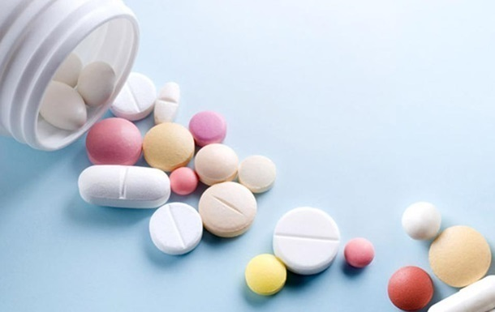

В чём различие между аналогами и дженериками
Аналоги, дженерики, синонимы, генерики, генерические препараты — всё это заменители оригинальных лекарств. Часто люди оказываются в ситуации, когда медикаменты от крупных фармацевтических компаний стоят очень дорого и их хочется заменить более дешёвыми средствами с тем же действующим веществом. При этом не все знают, можно ли назвать такие лекарства достойной альтернативой.
Что такое аналоги и дженерики, чем они отличаются от оригинальных препаратов
Доходы крупных фармацевтических концернов действительно велики, но получают их компании после того, как вкладывают большие суммы денег в создание оригинального препарата. Сначала учёные разрабатывают уникальную химическую формулу, затем ищут лучшие вспомогательные вещества. Далее специалисты проводят множество лабораторных исследований и клинических тестов. Наконец, когда новый прогрессивный продукт окончательно дорабатывают, его поставляют на фармрынок.
В течение первых 20–25 лет только у разработчика есть законное право выпускать препарат. Потом оригинальные лекарства начинают перевыпускать и другие компании. Они производят дженерики — копии бренда. Иногда обладатель патента на производство лекарства разрешает выпускать препарат раньше установленного срока, но за деньги. Разработчик не только получает дополнительную прибыль, но и контролирует процесс производства, не допускает, чтобы технологию нарушали. Так получается дженерик, который почти не уступает по качеству оригиналу. По своей цене дженерики близки к стоимости оригинального медикамента, но могут быть немного дешевле.
Сейчас дженериком принято называть и лекарство, которое увидело свет из-за принудительного лицензирования. С оригиналом оно схоже действующим веществом, проявляет ту же терапевтическую активность, но отличается составом вспомогательных ингредиентов.
Аналоги бывают двух видов. Первые — структурные, полные, у которых в составе те же активные вещества и схожие формы выпуска. В этом случае не нужно противопоставлять их дженерикам — это одно и то же.
Бывают действующие или групповые аналоги. Так называют лекарственные средства, которые содержат активные вещества со схожим механизмом действия. У групповых аналогов часто схожие формы выпуска. Например, к групповым аналогам можно отнести гели «Найз» и «Диклофенак» из группы нестероидных противовоспалительных средств.